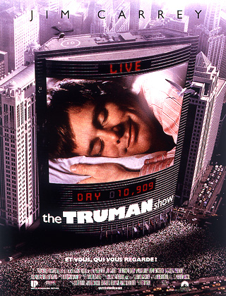

5 Août

The Truman Show
Réalisateur : Peter Weir
Synopsis : Truman Burbank mène une vie calme et heureuse. Il habite dans un petit pavillon propret de la radieuse station balnéaire de Seahaven. Il part tous les matins à son bureau d'agent d'assurances dont il ressort huit heures plus tard pour regagner son foyer, savourer le confort de son habitat modèle, la bonne humeur inaltérable et le sourire mécanique de sa femme, Meryl. Mais parfois, Truman étouffe sous tant de bonheur et la nuit l'angoisse le submerge. Il se sent de plus en plus étranger, comme si son entourage jouait un rôle. Pis encore, il se sent observé.
...
...